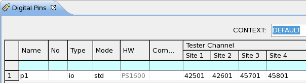
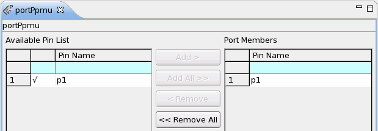
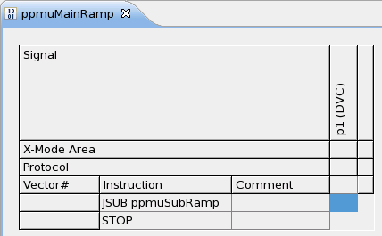
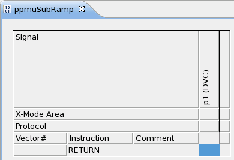
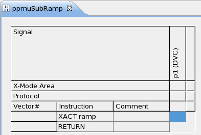

How to use PPMU as Arbitrary Waveform Generator (AWG)
With the PPMU of Smart Scale PS1600 channel card, you can generate analog waveforms.
Before you begin
You have an ADC device, and it consists of pin configuration, level, timing and pattern setup files.
Procedures
Step1: prepare the pin configuration file
- In the Pin Settings editor, click Digital Pins
editor to define your digital pin used as AWG.

- In the Ports editor, define a new port for PPMU containing the
digital pin connected to the ADC.

Step2: prepare the timing and level setup files
- Refer to PS1600 timing and vector setup to set up your timing configuration.
- Refer to PS1600 level setup to set up your level configuration.
Step3: prepare the patterns
- In the Pattern Explorer, create a main label for your PPMU port. The
label needs to call a subroutine containing your desired waveform. The ramp waveform is used as
an example.

- Create an empty sub-label for your main PPMU port.

Step4: create test methods for using PPMU as AWG
- To add a PPMU waveform to the PPMU sub-label, write your test method code with three APIs:
ANALOG_WAVEFORM, DC_WAVEFORM and PATTERN_CONTROLLER. Here is an
example.
virtual void connectInstruments() { PPMU_SETTING ppmuSetup; FLEX_RELAY connect; TASK_LIST taskList; ppmuSetup.pin("p1").vForce(-1 V).iRange(1 mA).min(0 mA).max(100 uA); connect.pin("p1").set("PPMU"); connect.wait(2 ms); taskList.add(ppmuSetup).add(connect).execute(); } virtual void createPpmuRamp() { ANALOG_WAVEFORM ramp("ramp"); ramp.definition(TM::RAMP).direction(TM::POS) .min(-1 V).max(5.5 V).samples(2048); DC_WAVEFORM dcWaveform; dcWaveform.vForce(ramp) .vRange(6 V).iRange(1 mA).sampleVectorDistance(1024); PATTERN_CONTROLLER patternControllerDcWaveForm; patternControllerDcWaveForm.label("ppmuSubRamp","portPpmu").add(dcWaveform); patternControllerDcWaveForm.setup(); } virtual void disconnectInstruments() { FLEX_RELAY disconnectPpmu; disconnectPpmu.pin("p1").set("IDLE","OFF"); disconnectPpmu.execute(); } virtual void run() { /*** 1) Waveform generation ***/ if ( firstRun ) { createPpmuRamp(); firstRun = false; } /*** 2) Test execution ***/ ON_FIRST_INVOCATION_BEGIN(); connectInstruments(); FUNCTIONAL_TEST(); disconnectInstruments(); ON_FIRST_INVOCATION_END(); return; } - The DC waveform container needs additional parameters:
vRange and iRange are used for compensating the waveform values.
Note These ranges are not applied to the PMU hardware. This must have been done previously by the user when he prepares the system for waveform generation with the PPMU.sampleVectorDistance specifies the distance between waveform points
The waveform will be added via PATTERN_CONTROLLER API.
Step5: create test suites to call the UTM
- Generate a testflow and insert some test suites, which will use your prepared UTM codes from step 4.
- After running the previous code example, you can see the sub-label looks like below:

Results
You have used PPMU of the PS1600 card to generate an analog waveform.
What to do next
Functional changes
- Introduced in SmarTest 7.2.0